2026 Advanced Higher Computing Science marking instructions
Source: Scottish Qualifications Authority (SQA) / Qualifications Scotland. This is a StemInteract HTML companion, not an official HTML edition. Selectable text is supplied alongside original page images. Use the images or original PDF for equations, powers, fractions, vector notation, tables and diagrams; text extraction cannot fully preserve mathematical layout.
Jump to a question
PDF page 1
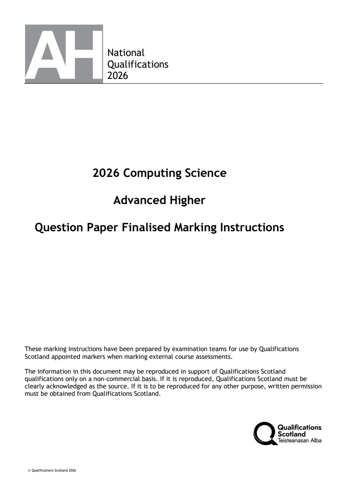
Selectable page text
National
Qualifications
2026
2026 Computing Science
Advanced Higher
Question Paper Finalised Marking Instructions
These marking instructions have been prepared by examination teams for use by Qualifications
Scotland appointed markers when marking external course assessments.
The information in this document may be reproduced in support of Qualifications Scotland
qualifications only on a non-commercial basis. If it is reproduced, Qualifications Scotland must be
clearly acknowledged as the source. If it is to be reproduced for any other purpose, written permission
must be obtained from Qualifications Scotland.
© Qualifications Scotland 2026PDF page 2
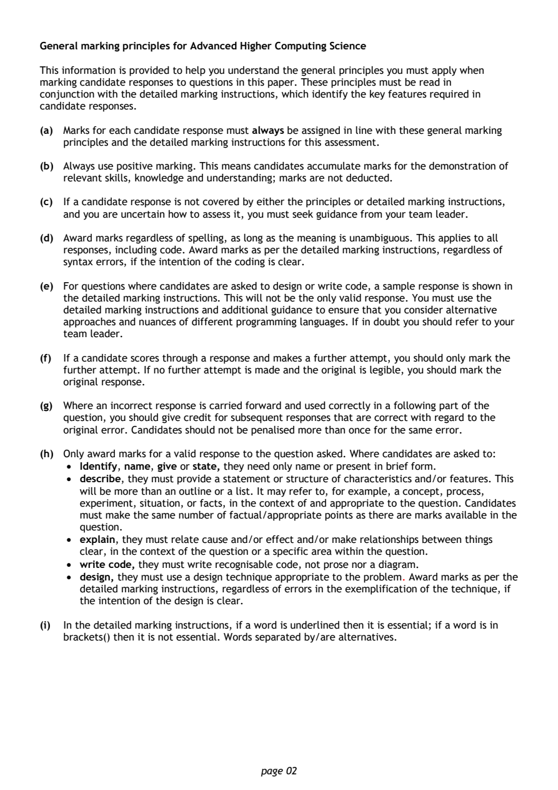
Selectable page text
General marking principles for Advanced Higher Computing Science
This information is provided to help you understand the general principles you must apply when
marking candidate responses to questions in this paper. These principles must be read in
conjunction with the detailed marking instructions, which identify the key features required in
candidate responses.
(a) Marks for each candidate response must always be assigned in line with these general marking
principles and the detailed marking instructions for this assessment.
(b) Always use positive marking. This means candidates accumulate marks for the demonstration of
relevant skills, knowledge and understanding; marks are not deducted.
(c) If a candidate response is not covered by either the principles or detailed marking instructions,
and you are uncertain how to assess it, you must seek guidance from your team leader.
(d) Award marks regardless of spelling, as long as the meaning is unambiguous. This applies to all
responses, including code. Award marks as per the detailed marking instructions, regardless of
syntax errors, if the intention of the coding is clear.
(e) For questions where candidates are asked to design or write code, a sample response is shown in
the detailed marking instructions. This will not be the only valid response. You must use the
detailed marking instructions and additional guidance to ensure that you consider alternative
approaches and nuances of different programming languages. If in doubt you should refer to your
team leader.
(f) If a candidate scores through a response and makes a further attempt, you should only mark the
further attempt. If no further attempt is made and the original is legible, you should mark the
original response.
(g) Where an incorrect response is carried forward and used correctly in a following part of the
question, you should give credit for subsequent responses that are correct with regard to the
original error. Candidates should not be penalised more than once for the same error.
(h) Only award marks for a valid response to the question asked. Where candidates are asked to:
• Identify, name, give or state, they need only name or present in brief form.
• describe, they must provide a statement or structure of characteristics and/or features. This
will be more than an outline or a list. It may refer to, for example, a concept, process,
experiment, situation, or facts, in the context of and appropriate to the question. Candidates
must make the same number of factual/appropriate points as there are marks available in the
question.
• explain, they must relate cause and/or effect and/or make relationships between things
clear, in the context of the question or a specific area within the question.
• write code, they must write recognisable code, not prose nor a diagram.
• design, they must use a design technique appropriate to the problem. Award marks as per the
detailed marking instructions, regardless of errors in the exemplification of the technique, if
the intention of the design is clear.
(i) In the detailed marking instructions, if a word is underlined then it is essential; if a word is in
brackets() then it is not essential. Words separated by/are alternatives.
page 02PDF page 3
Question 1Question 2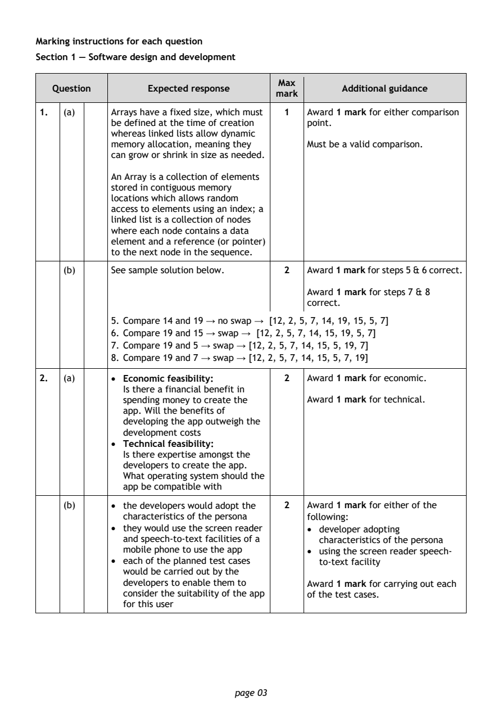
Selectable page text
Marking instructions for each question
Section 1 — Software design and development
Max
Question Expected response Additional guidance
mark
1. (a) Arrays have a fixed size, which must 1 Award 1 mark for either comparison
be defined at the time of creation point.
whereas linked lists allow dynamic
memory allocation, meaning they Must be a valid comparison.
can grow or shrink in size as needed.
An Array is a collection of elements
stored in contiguous memory
locations which allows random
access to elements using an index; a
linked list is a collection of nodes
where each node contains a data
element and a reference (or pointer)
to the next node in the sequence.
(b) See sample solution below. 2 Award 1 mark for steps 5 & 6 correct.
Award 1 mark for steps 7 & 8
correct.
5. Compare 14 and 19 → no swap → [12, 2, 5, 7, 14, 19, 15, 5, 7]
6. Compare 19 and 15 → swap → [12, 2, 5, 7, 14, 15, 19, 5, 7]
7. Compare 19 and 5 → swap → [12, 2, 5, 7, 14, 15, 5, 19, 7]
8. Compare 19 and 7 → swap → [12, 2, 5, 7, 14, 15, 5, 7, 19]
2. (a) • Economic feasibility: 2 Award 1 mark for economic.
Is there a financial benefit in
spending money to create the Award 1 mark for technical.
app. Will the benefits of
developing the app outweigh the
development costs
• Technical feasibility:
Is there expertise amongst the
developers to create the app.
What operating system should the
app be compatible with
(b) • the developers would adopt the 2 Award 1 mark for either of the
characteristics of the persona following:
• they would use the screen reader • developer adopting
and speech-to-text facilities of a characteristics of the persona
mobile phone to use the app • using the screen reader speech-
• each of the planned test cases to-text facility
would be carried out by the
developers to enable them to Award 1 mark for carrying out each
consider the suitability of the app of the test cases.
for this user
page 03PDF page 4
Question 3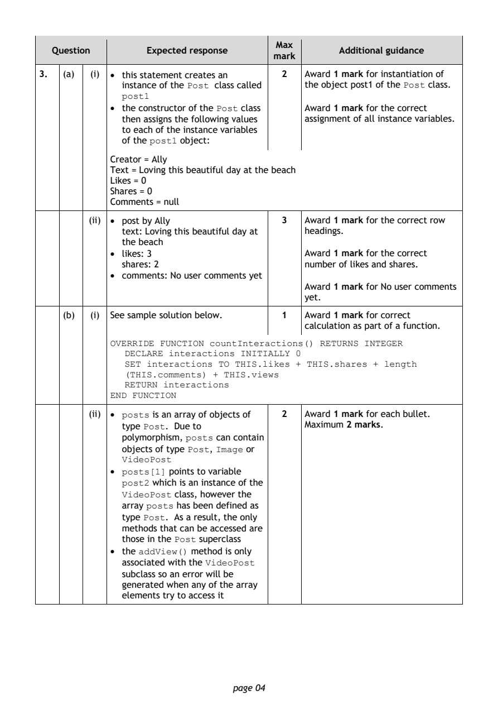
Selectable page text
Max
Question Expected response Additional guidance
mark
3. (a) (i) • this statement creates an 2 Award 1 mark for instantiation of
instance of the Post class called the object post1 of the Post class.
post1
• the constructor of the Post class Award 1 mark for the correct
then assigns the following values assignment of all instance variables.
to each of the instance variables
of the post1 object:
Creator = Ally
Text = Loving this beautiful day at the beach
Likes = 0
Shares = 0
Comments = null
(ii) • post by Ally 3 Award 1 mark for the correct row
text: Loving this beautiful day at headings.
the beach
• likes: 3 Award 1 mark for the correct
shares: 2 number of likes and shares.
• comments: No user comments yet
Award 1 mark for No user comments
yet.
(b) (i) See sample solution below. 1 Award 1 mark for correct
calculation as part of a function.
OVERRIDE FUNCTION countInteractions() RETURNS INTEGER
DECLARE interactions INITIALLY 0
SET interactions TO THIS.likes + THIS.shares + length
(THIS.comments) + THIS.views
RETURN interactions
END FUNCTION
(ii) • posts is an array of objects of 2 Award 1 mark for each bullet.
type Post. Due to Maximum 2 marks.
polymorphism, posts can contain
objects of type Post, Image or
VideoPost
• posts[1] points to variable
post2 which is an instance of the
VideoPost class, however the
array posts has been defined as
type Post. As a result, the only
methods that can be accessed are
those in the Post superclass
• the addView() method is only
associated with the VideoPost
subclass so an error will be
generated when any of the array
elements try to access it
page 04PDF page 5
Question 4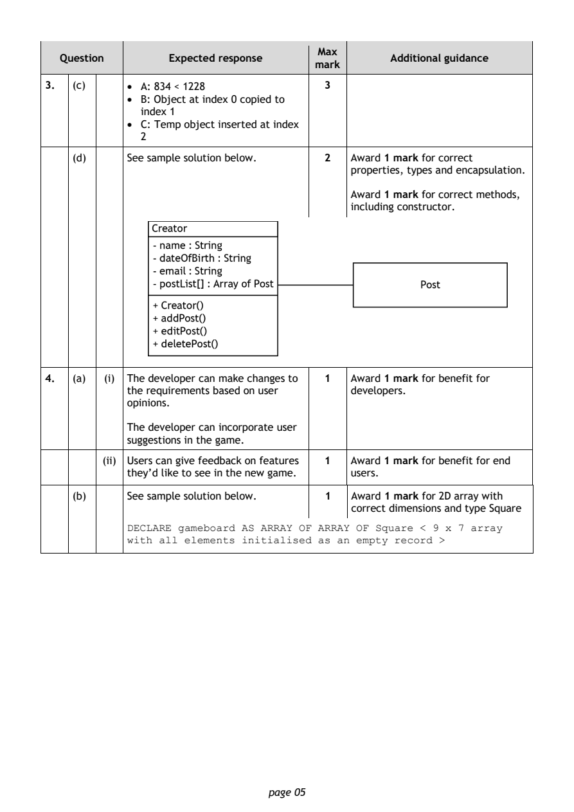
Selectable page text
Max
Question Expected response Additional guidance
mark
3. (c) • A: 834 < 1228 3
• B: Object at index 0 copied to
index 1
• C: Temp object inserted at index
2
(d) See sample solution below. 2 Award 1 mark for correct
properties, types and encapsulation.
Award 1 mark for correct methods,
including constructor.
4. (a) (i) The developer can make changes to 1 Award 1 mark for benefit for
the requirements based on user developers.
opinions.
The developer can incorporate user
suggestions in the game.
(ii) Users can give feedback on features 1 Award 1 mark for benefit for end
they’d like to see in the new game. users.
(b) See sample solution below. 1 Award 1 mark for 2D array with
correct dimensions and type Square
DECLARE gameboard AS ARRAY OF ARRAY OF Square < 9 x 7 array
with all elements initialised as an empty record >
page 05PDF page 6
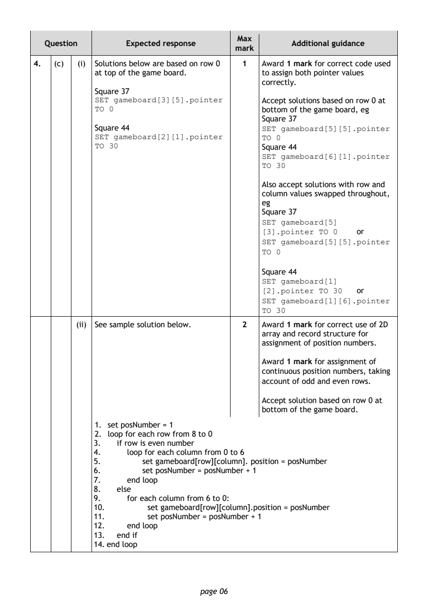
Selectable page text
Max
Question Expected response Additional guidance
mark
4. ( c) (i) Solutions below are based on row 0 1 Award 1 mark for correct code used
at top of the game board. to assign both pointer values
correctly.
Square 37
SET gameboard[3][5].pointer Accept solutions based on row 0 at
TO 0 bottom of the game board, eg
Square 37
Square 44 SET gameboard[5][5].pointer
SET gameboard[2][1].pointer TO 0
TO 30 Square 44
SET gameboard[6][1].pointer
TO 30
Also accept solutions with row and
column values swapped throughout,
eg
Square 37
SET gameboard[5]
[3].pointer TO 0 or
SET gameboard[5][5].pointer
TO 0
Square 44
SET gameboard[1]
[2].pointer TO 30 or
SET gameboard[1][6].pointer
TO 30
(ii) See sample solution below. 2 Award 1 mark for correct use of 2D
array and record structure for
assignment of position numbers.
Award 1 mark for assignment of
continuous position numbers, taking
account of odd and even rows.
Accept solution based on row 0 at
bottom of the game board.
1. set posNumber = 1
2. loop for each row from 8 to 0
3. if row is even number
4. loop for each column from 0 to 6
5. set gameboard[row][column]. position = posNumber
6. set posNumber = posNumber + 1
7. end loop
8. else
9. for each column from 6 to 0:
10. set gameboard[row][column].position = posNumber
11. set posNumber = posNumber + 1
12. end loop
13. end if
14. end loop
page 06PDF page 7
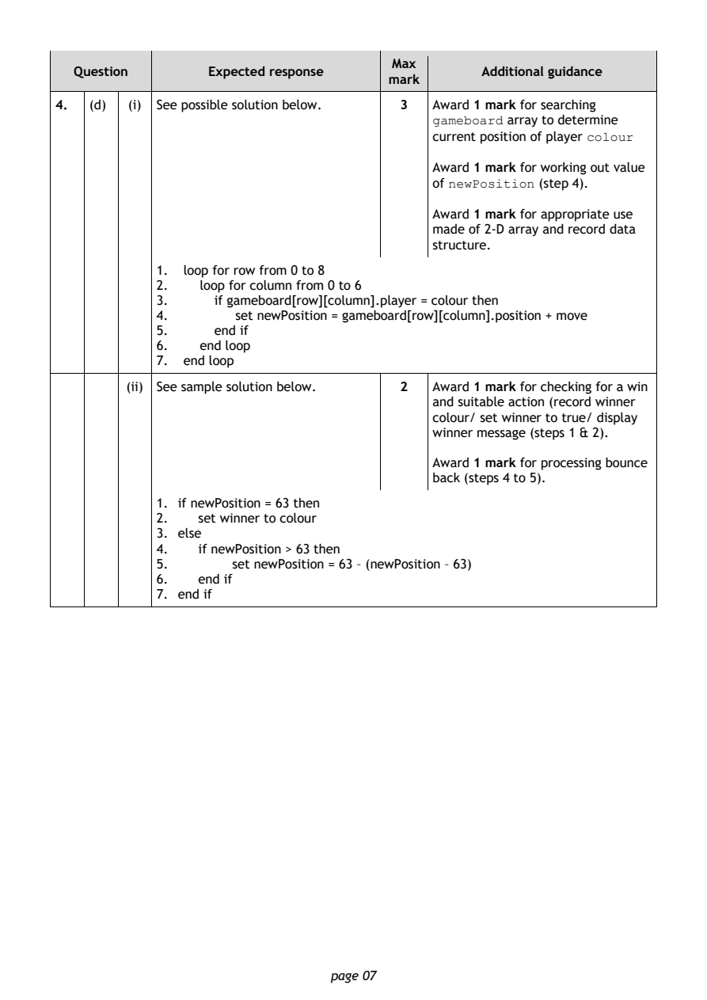
Selectable page text
Max
Question Expected response Additional guidance
mark
4. (d) (i) See possible solution below. 3 Award 1 mark for searching
gameboard array to determine
current position of player colour
Award 1 mark for working out value
of newPosition (step 4).
Award 1 mark for appropriate use
made of 2-D array and record data
structure.
1. loop for row from 0 to 8
2. loop for column from 0 to 6
3. if gameboard[row][column].player = colour then
4. set newPosition = gameboard[row][column].position + move
5. end if
6. end loop
7. end loop
(ii) See sample solution below. 2 Award 1 mark for checking for a win
and suitable action (record winner
colour/ set winner to true/ display
winner message (steps 1 & 2).
Award 1 mark for processing bounce
back (steps 4 to 5).
1. if newPosition = 63 then
2. set winner to colour
3. else
4. if newPosition > 63 then
5. set newPosition = 63 – (newPosition – 63)
6. end if
7. end if
page 07PDF page 8
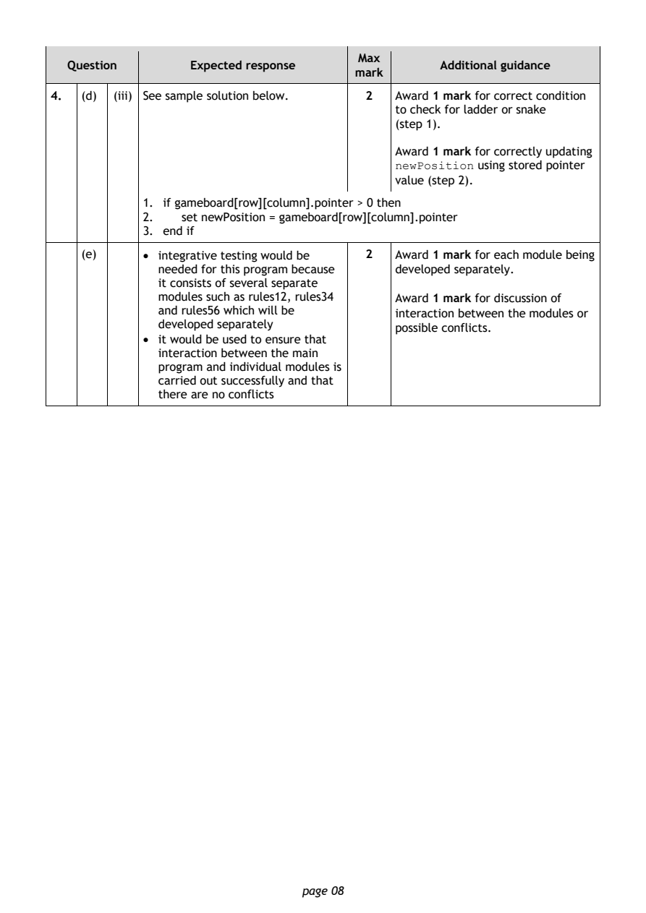
Selectable page text
Max
Question Expected response Additional guidance
mark
4. (d) (iii) See sample solution below. 2 Award 1 mark for correct condition
to check for ladder or snake
(step 1).
Award 1 mark for correctly updating
newPosition using stored pointer
value (step 2).
1. if gameboard[row][column].pointer > 0 then
2. set newPosition = gameboard[row][column].pointer
3. end if
(e) • integrative testing would be 2 Award 1 mark for each module being
needed for this program because developed separately.
it consists of several separate
modules such as rules12, rules34 Award 1 mark for discussion of
and rules56 which will be interaction between the modules or
developed separately
possible conflicts.
• it would be used to ensure that
interaction between the main
program and individual modules is
carried out successfully and that
there are no conflicts
page 08PDF page 9
Question 5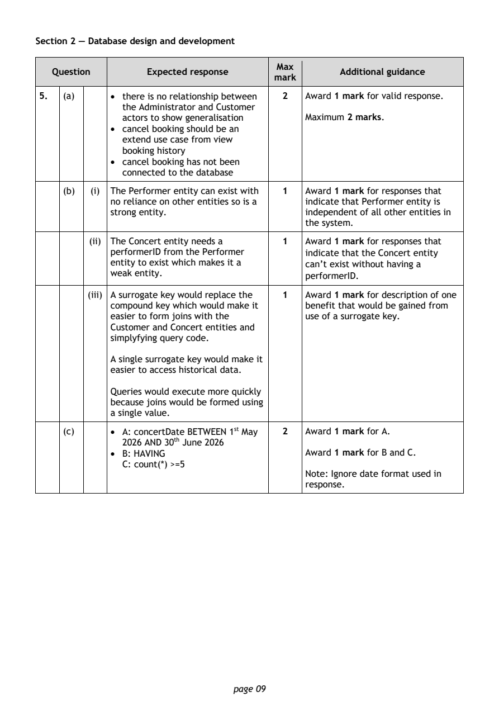
Selectable page text
Section 2 — Database design and development
Max
Question Expected response Additional guidance
mark
5. (a) • there is no relationship between 2 Award 1 mark for valid response.
the Administrator and Customer
actors to show generalisation Maximum 2 marks.
• cancel booking should be an
extend use case from view
booking history
• cancel booking has not been
connected to the database
(b) (i) The Performer entity can exist with 1 Award 1 mark for responses that
no reliance on other entities so is a indicate that Performer entity is
strong entity. independent of all other entities in
the system.
(ii) The Concert entity needs a 1 Award 1 mark for responses that
performerID from the Performer indicate that the Concert entity
entity to exist which makes it a can’t exist without having a
weak entity.
performerID.
(iii) A surrogate key would replace the 1 Award 1 mark for description of one
compound key which would make it benefit that would be gained from
easier to form joins with the use of a surrogate key.
Customer and Concert entities and
simplyfying query code.
A single surrogate key would make it
easier to access historical data.
Queries would execute more quickly
because joins would be formed using
a single value.
(c) • A: concertDate BETWEEN 1st May 2 Award 1 mark for A.
2026 AND 30th June 2026
• B: HAVING Award 1 mark for B and C.
C: count(*) >=5
Note: Ignore date format used in
response.
page 09PDF page 10
Question 6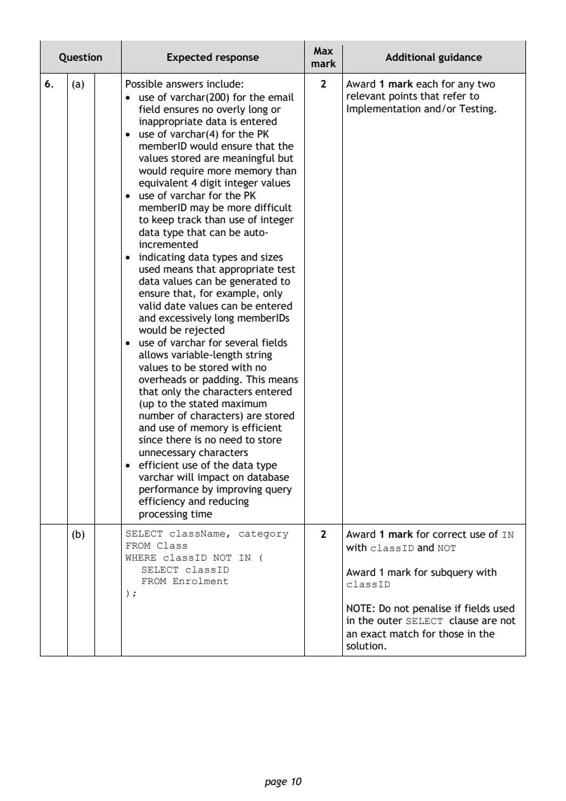
Selectable page text
Max
Question Expected response Additional guidance
mark
6. (a) Possible answers include: 2 Award 1 mark each for any two
• use of varchar(200) for the email relevant points that refer to
field ensures no overly long or I mplementation and/or Testing.
inappropriate data is entered
• use of varchar(4) for the PK
memberID would ensure that the
values stored are meaningful but
would require more memory than
equivalent 4 digit integer values
• use of varchar for the PK
memberID may be more difficult
to keep track than use of integer
data type that can be auto-
incremented
• indicating data types and sizes
used means that appropriate test
data values can be generated to
ensure that, for example, only
valid date values can be entered
and excessively long memberIDs
would be rejected
• use of varchar for several fields
allows variable-length string
values to be stored with no
overheads or padding. This means
that only the characters entered
(up to the stated maximum
number of characters) are stored
and use of memory is efficient
since there is no need to store
unnecessary characters
• efficient use of the data type
varchar will impact on database
performance by improving query
efficiency and reducing
processing time
(b) SELECT className, category 2 Award 1 mark for correct use of IN
FROM Class with classID and NOT
WHERE classID NOT IN (
SELECT classID
Award 1 mark for subquery with
FROM Enrolment classID
);
NOTE: Do not penalise if fields used
in the outer SELECT clause are not
an exact match for those in the
solution.
page 10PDF page 11
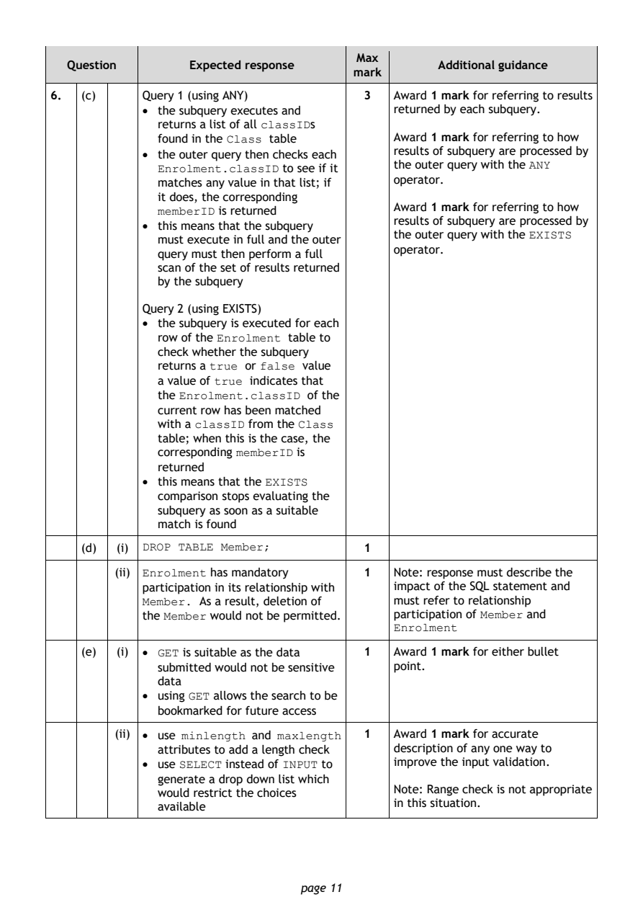
Selectable page text
Max
Question Expected response Additional guidance
mark
6. (c) Query 1 (using ANY) 3 Award 1 mark for referring to results
• the subquery executes and returned by each subquery.
returns a list of all classIDs
found in the Class table Award 1 mark for referring to how
results of subquery are processed by
• the outer query then checks each
Enrolment.classID to see if it the outer query with the ANY
operator.
matches any value in that list; if
it does, the corresponding
memberID is returned Award 1 mark for referring to how
results of subquery are processed by
• this means that the subquery
the outer query with the EXISTS
must execute in full and the outer
operator.
query must then perform a full
scan of the set of results returned
by the subquery
Query 2 (using EXISTS)
• the subquery is executed for each
row of the Enrolment table to
check whether the subquery
returns a true or false value
a value of true indicates that
the Enrolment.classID of the
current row has been matched
with a classID from the Class
table; when this is the case, the
corresponding memberID is
returned
• this means that the EXISTS
comparison stops evaluating the
subquery as soon as a suitable
match is found
(d) (i) DROP TABLE Member; 1
(ii) Enrolment has mandatory 1 Note: response must describe the
participation in its relationship with impact of the SQL statement and
Member. As a result, deletion of must refer to relationship
the Member would not be permitted. participation of Member and
Enrolment
(e) (i) • GET is suitable as the data 1 Award 1 mark for either bullet
submitted would not be sensitive point.
data
• using GET allows the search to be
bookmarked for future access
(ii) • use minlength and maxlength 1 Award 1 mark for accurate
attributes to add a length check description of any one way to
• use SELECT instead of INPUT to improve the input validation.
generate a drop down list which
Note: Range check is not appropriate
would restrict the choices
in this situation.
available
page 11PDF page 12
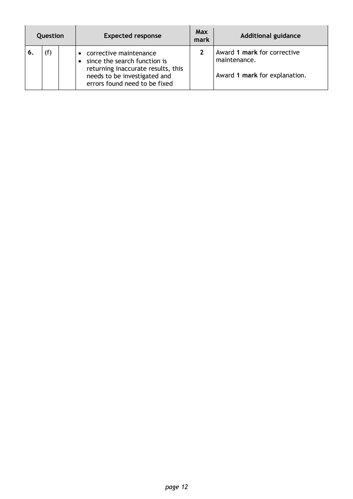
Selectable page text
Max
Question Expected response Additional guidance
mark
6. (f) • corrective maintenance 2 Award 1 mark for corrective
• since the search function is maintenance.
returning inaccurate results, this
needs to be investigated and Award 1 mark for explanation.
errors found need to be fixed
page 12PDF page 13
Question 7Question 8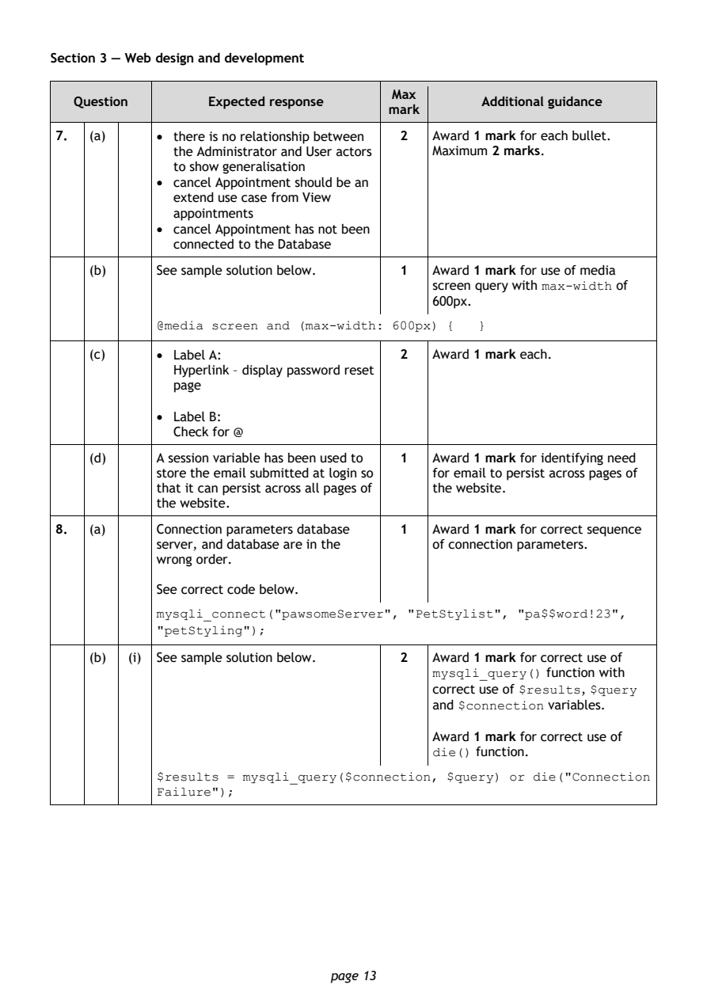
Selectable page text
Section 3 — Web design and development
Max
Question Expected response Additional guidance
mark
7. (a) • there is no relationship between 2 Award 1 mark for each bullet.
the Administrator and User actors Maximum 2 marks.
to show generalisation
• cancel Appointment should be an
extend use case from View
appointments
• cancel Appointment has not been
connected to the Database
(b) See sample solution below. 1 Award 1 mark for use of media
screen query with max-width of
600px.
@media screen and (max-width: 600px) { }
(c) • Label A: 2 Award 1 mark each.
Hyperlink – display password reset
page
• Label B:
Check for @
(d) A session variable has been used to 1 Award 1 mark for identifying need
store the email submitted at login so for email to persist across pages of
that it can persist across all pages of the website.
the website.
8. (a) Connection parameters database 1 Award 1 mark for correct sequence
server, and database are in the of connection parameters.
wrong order.
See correct code below.
mysqli_connect("pawsomeServer", "PetStylist", "pa$$word!23",
"petStyling");
(b) (i) See sample solution below. 2 Award 1 mark for correct use of
mysqli_query() function with
correct use of $results, $query
and $connection variables.
Award 1 mark for correct use of
die() function.
$results = mysqli_query($connection, $query) or die("Connection
Failure");
page 13PDF page 14
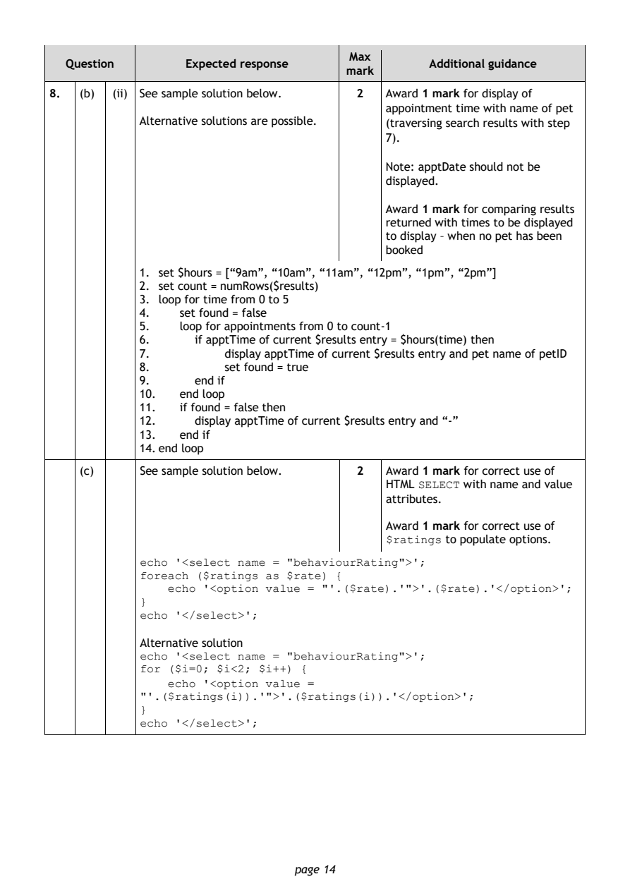
Selectable page text
Max
Question Expected response Additional guidance
mark
8. (b) (ii) See sample solution below. 2 Award 1 mark for display of
appointment time with name of pet
Alternative solutions are possible. (traversing search results with step
7).
Note: apptDate should not be
displayed.
Award 1 mark for comparing results
returned with times to be displayed
to display – when no pet has been
booked
1. set $hours = [“9am”, “10am”, “11am”, “12pm”, “1pm”, “2pm”]
2. set count = numRows($results)
3. loop for time from 0 to 5
4. set found = false
5. loop for appointments from 0 to count-1
6. if apptTime of current $results entry = $hours(time) then
7. display apptTime of current $results entry and pet name of petID
8. set found = true
9. end if
10. end loop
11. if found = false then
12. display apptTime of current $results entry and “-”
13. end if
14. end loop
(c) See sample solution below. 2 Award 1 mark for correct use of
HTML SELECT with name and value
attributes.
Award 1 mark for correct use of
$ratings to populate options.
echo '<select name = "behaviourRating">';
foreach ($ratings as $rate) {
echo '<option value = "'.($rate).'">'.($rate).'</option>';
}
echo '</select>';
Alternative solution
echo '<select name = "behaviourRating">';
for ($i=0; $i<2; $i++) {
echo '<option value =
"'.($ratings(i)).'">'.($ratings(i)).'</option>';
}
echo '</select>';
page 14PDF page 15
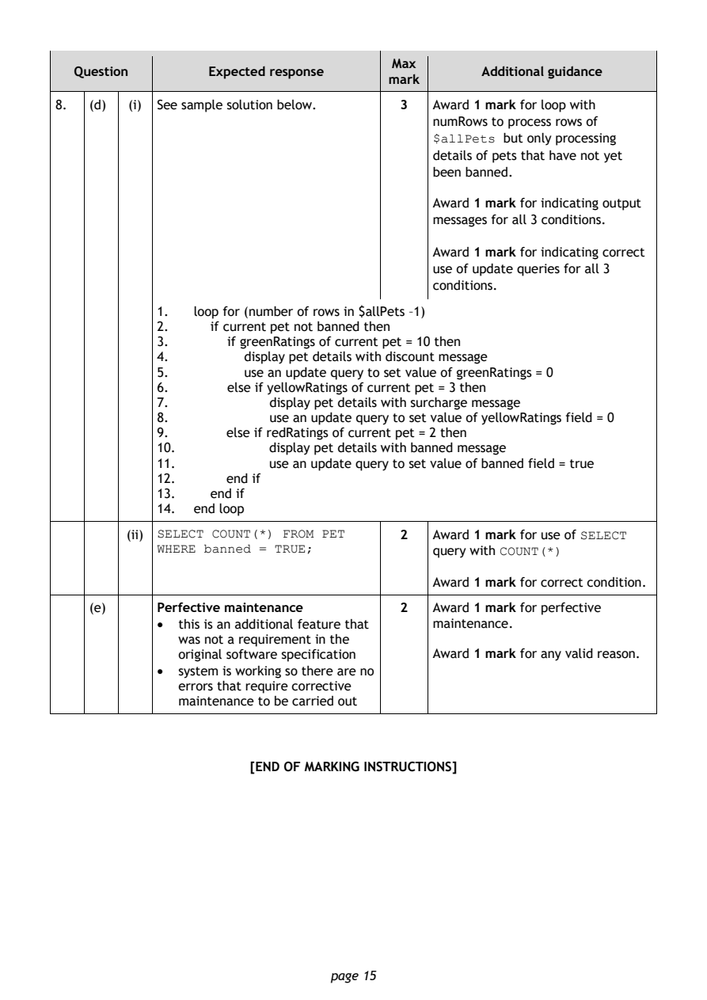
Selectable page text
Max
Question Expected response Additional guidance
mark
8. (d) (i) See sample solution below. 3 Award 1 mark for loop with
numRows to process rows of
$allPets but only processing
details of pets that have not yet
been banned.
Award 1 mark for indicating output
messages for all 3 conditions.
Award 1 mark for indicating correct
use of update queries for all 3
conditions.
1. loop for (number of rows in $allPets –1)
2. if current pet not banned then
3. if greenRatings of current pet = 10 then
4. display pet details with discount message
5. use an update query to set value of greenRatings = 0
6. else if yellowRatings of current pet = 3 then
7. display pet details with surcharge message
8. use an update query to set value of yellowRatings field = 0
9. else if redRatings of current pet = 2 then
10. display pet details with banned message
11. use an update query to set value of banned field = true
12. end if
13. end if
14. end loop
(ii) SELECT COUNT(*) FROM PET 2 Award 1 mark for use of SELECT
WHERE banned = TRUE; query with COUNT(*)
Award 1 mark for correct condition.
(e) Perfective maintenance 2 Award 1 mark for perfective
• this is an additional feature that maintenance.
was not a requirement in the
original software specification Award 1 mark for any valid reason.
• system is working so there are no
errors that require corrective
maintenance to be carried out
[END OF MARKING INSTRUCTIONS]
page 15